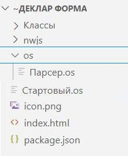

ЗагрузитьСценарии(<Каталог>)
Тип: Структура.
Структура, содержащая подключенные сценарии. Ключ элемента совпадает с именем файла подключенного сценария (без расширения).
Находит файлы сценария по указанному пути, вставляет их в структуру, которую подключает к текущей системе типов.
Путь = Новый Файл(СтартовыйСценарий().Источник).Путь; СценарииИзos = ДФ.ЗагрузитьСценарии(Путь + "os"); // И станут доступны сценарии из каталога (Путь + "os").
Копировать Выделить всё//== Файл Главный.os == начало ПодключитьВнешнююКомпоненту("C:\444\111\DeclarativeForms\DeclarativeForms\bin\Debug\DeclarativeForms.dll"); ДФ = Новый ДекларативныеФормы(); Форма1 = ДФ.Форма; ОбщаяСтруктура = ДФ.ОбщаяСтруктура; ОбщаяСтруктура.Вставить("Ключ1", "Значение1"); Для Каждого эл Из ОбщаяСтруктура Цикл Сообщить("ОбщаяСтруктура Ключ = " + эл.Ключ + " Значение = " + Эл.Значение); КонецЦикла; Сообщить("============"); ДФ.ЗагрузитьСценарии(".\"); // И станут доступны ОбщаяСтруктура.Сценарии. Для Каждого эл Из ОбщаяСтруктура.Сценарии Цикл Сообщить("Сценарии Ключ = " + эл.Ключ + " Значение = " + Эл.Значение); КонецЦикла; Сообщить("============"); Путь = Новый Файл(СтартовыйСценарий().Источник).Путь; Сообщить("Путь = " + Путь); СценарииИзos = ДФ.ЗагрузитьСценарии(Путь + "os"); // И станут доступны сценарии из каталога (Путь + "os"). Для Каждого эл Из СценарииИзos Цикл Сообщить("СценарииИзos Ключ = " + эл.Ключ + " Значение = " + Эл.Значение); КонецЦикла; Сообщить("============"); Структура1 = Новый Структура("Ключ1", "Значение1"); Действие = ДФ.Действие(СценарииИзos.Парсер, "МояФункцияИзПарсер", Структура1); ДФ.Выполнить(Действие); Форма1.Открыть(); //== Файл Главный.os == конец //== Файл Парсер.os == начало Функция МояФункцияИзПарсер() Экспорт Пар = ОбщаяСтруктура.ДФ.АргументыСобытия.Параметр; Сообщить("Пар[""Ключ1""] = " + Пар["Ключ1"] + " " + ТекущаяУниверсальнаяДатаВМиллисекундах()); Возврат "Результат из Парсера"; КонецФункции Сообщить("из Парсер ОбщаяСтруктура.ДФ = " + ОбщаяСтруктура.ДФ); Сообщить("из Парсер ОбщаяСтруктура.Сценарии = " + ОбщаяСтруктура.Сценарии); Сообщить("======================="); //== Файл Парсер.os == конец
Копировать Выделить всёПодключитьВнешнююКомпоненту("C:\444\111\DeclarativeForms\DeclarativeForms\bin\Debug\DeclarativeForms.dll"); ДФ = Новый ДекларативныеФормы(); Форма1 = ДФ.Форма; ОбщаяСтруктура = ДФ.ОбщаяСтруктура; ДФ.ЗагрузитьСценарии(".\"); Для Каждого эл Из ОбщаяСтруктура.Сценарии Цикл Сообщить("Сценарии Ключ = " + эл.Ключ + " Значение = " + Эл.Значение); КонецЦикла; Форма1.Открыть();